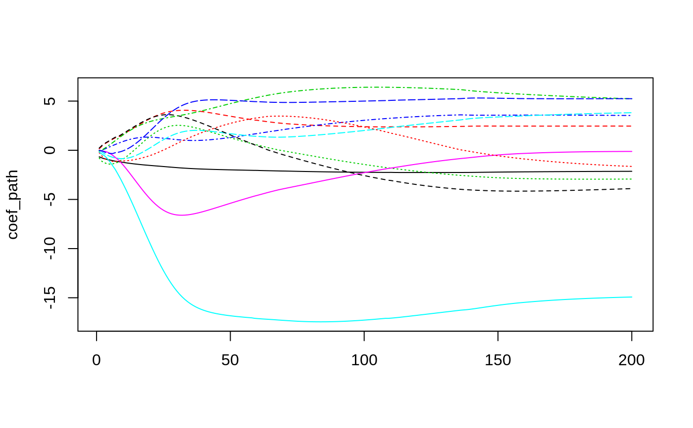
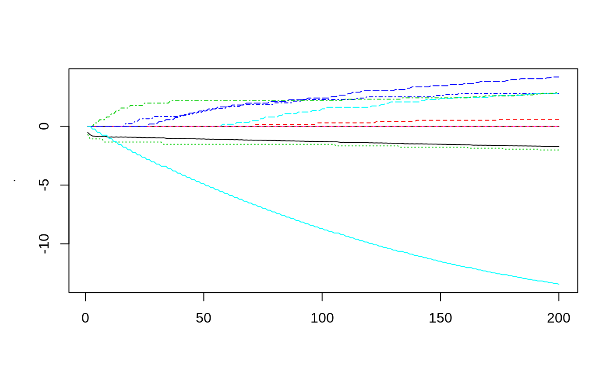
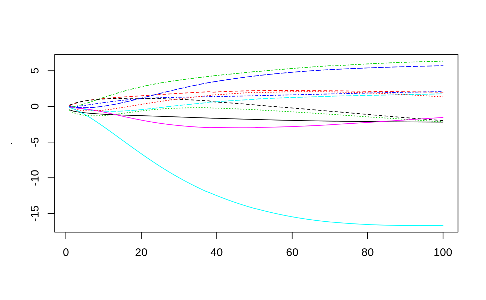
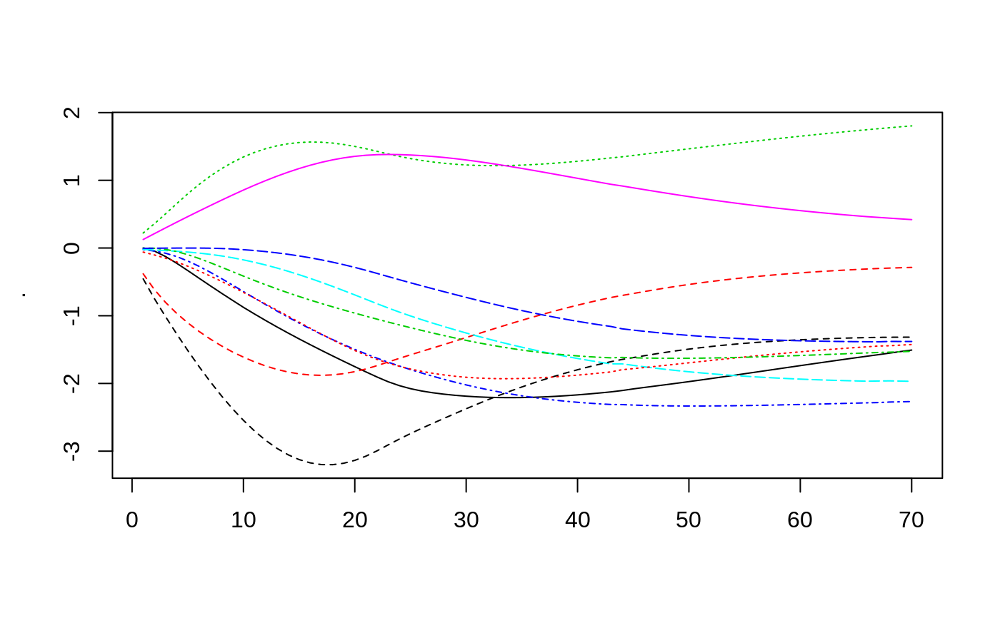
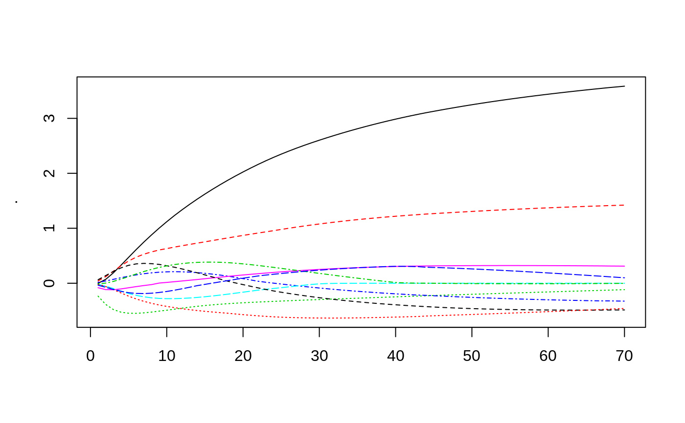
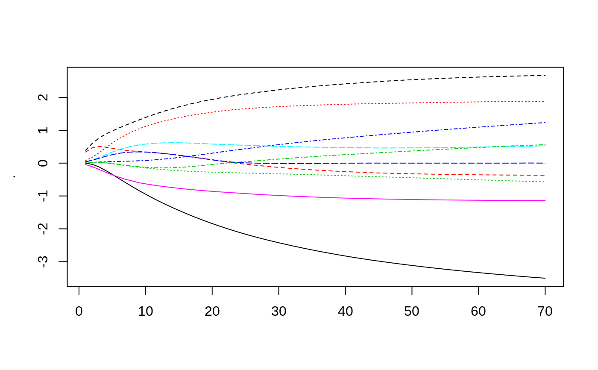
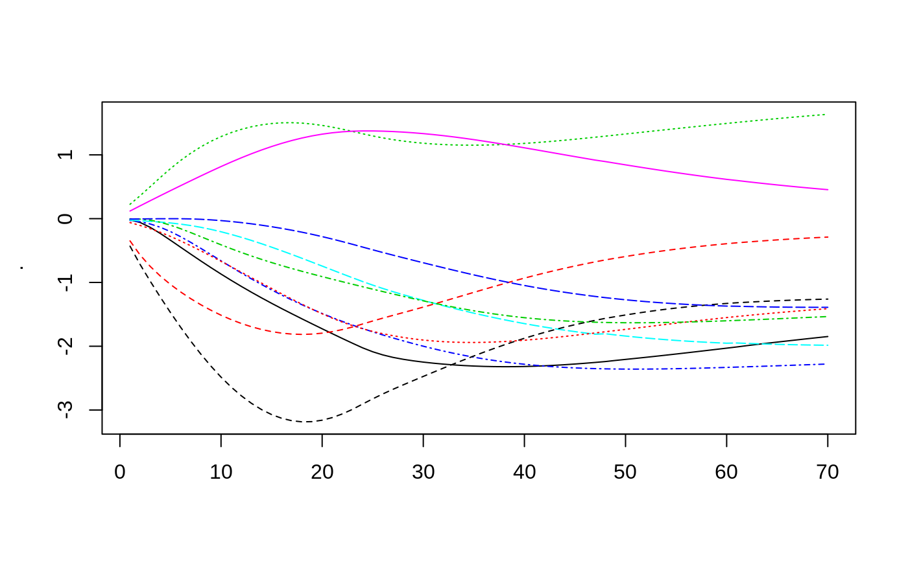

R/callbacks.R
cb.gblinear.history.RdCallback closure for collecting the model coefficients history of a gblinear booster during its training.
cb.gblinear.history(sparse = FALSE)
| sparse | when set to FALSE/TURE, a dense/sparse matrix is used to store the result. Sparse format is useful when one expects only a subset of coefficients to be non-zero, when using the "thrifty" feature selector with fairly small number of top features selected per iteration. |
|---|
Results are stored in the coefs element of the closure.
The xgb.gblinear.history convenience function provides an easy way to access it.
With xgb.train, it is either a dense of a sparse matrix.
While with xgb.cv, it is a list (an element per each fold) of such matrices.
To keep things fast and simple, gblinear booster does not internally store the history of linear model coefficients at each boosting iteration. This callback provides a workaround for storing the coefficients' path, by extracting them after each training iteration.
Callback function expects the following values to be set in its calling frame:
bst (or bst_folds).
#### Binary classification: # # In the iris dataset, it is hard to linearly separate Versicolor class from the rest # without considering the 2nd order interactions: require(magrittr)#>#> [1] "Sepal.Length" "Sepal.Width" #> [3] "Petal.Length" "Petal.Width" #> [5] "Sepal.Length:Sepal.Width" "Sepal.Length:Petal.Length" #> [7] "Sepal.Length:Petal.Width" "Sepal.Width:Petal.Length" #> [9] "Sepal.Width:Petal.Width" "Petal.Length:Petal.Width"dtrain <- xgb.DMatrix(scale(x), label = 1*(iris$Species == "versicolor")) param <- list(booster = "gblinear", objective = "reg:logistic", eval_metric = "auc", lambda = 0.0003, alpha = 0.0003, nthread = 2) # For 'shotgun', which is a default linear updater, using high eta values may result in # unstable behaviour in some datasets. With this simple dataset, however, the high learning # rate does not break the convergence, but allows us to illustrate the typical pattern of # "stochastic explosion" behaviour of this lock-free algorithm at early boosting iterations. bst <- xgb.train(param, dtrain, list(tr=dtrain), nrounds = 200, eta = 1., callbacks = list(cb.gblinear.history()))#> [1] tr-auc:0.809600 #> [2] tr-auc:0.828400 #> [3] tr-auc:0.837800 #> [4] tr-auc:0.844000 #> [5] tr-auc:0.849800 #> [6] tr-auc:0.857000 #> [7] tr-auc:0.868000 #> [8] tr-auc:0.875000 #> [9] tr-auc:0.881400 #> [10] tr-auc:0.890200 #> [11] tr-auc:0.898800 #> [12] tr-auc:0.908600 #> [13] tr-auc:0.918000 #> [14] tr-auc:0.925000 #> [15] tr-auc:0.935800 #> [16] tr-auc:0.942000 #> [17] tr-auc:0.948600 #> [18] tr-auc:0.954600 #> [19] tr-auc:0.960800 #> [20] tr-auc:0.965000 #> [21] tr-auc:0.969600 #> [22] tr-auc:0.972400 #> [23] tr-auc:0.977000 #> [24] tr-auc:0.979800 #> [25] tr-auc:0.982600 #> [26] tr-auc:0.984400 #> [27] tr-auc:0.986800 #> [28] tr-auc:0.988800 #> [29] tr-auc:0.991000 #> [30] tr-auc:0.993200 #> [31] tr-auc:0.994000 #> [32] tr-auc:0.994400 #> [33] tr-auc:0.995800 #> [34] tr-auc:0.996200 #> [35] tr-auc:0.996400 #> [36] tr-auc:0.997000 #> [37] tr-auc:0.997200 #> [38] tr-auc:0.997400 #> [39] tr-auc:0.997400 #> [40] tr-auc:0.997600 #> [41] tr-auc:0.998000 #> [42] tr-auc:0.998000 #> [43] tr-auc:0.998000 #> [44] tr-auc:0.998000 #> [45] tr-auc:0.998000 #> [46] tr-auc:0.998000 #> [47] tr-auc:0.998000 #> [48] tr-auc:0.998000 #> [49] tr-auc:0.998000 #> [50] tr-auc:0.998000 #> [51] tr-auc:0.998000 #> [52] tr-auc:0.998000 #> [53] tr-auc:0.998000 #> [54] tr-auc:0.998000 #> [55] tr-auc:0.998000 #> [56] tr-auc:0.998000 #> [57] tr-auc:0.998000 #> [58] tr-auc:0.998000 #> [59] tr-auc:0.998000 #> [60] tr-auc:0.998000 #> [61] tr-auc:0.998000 #> [62] tr-auc:0.998200 #> [63] tr-auc:0.998200 #> [64] tr-auc:0.998000 #> [65] tr-auc:0.998000 #> [66] tr-auc:0.998000 #> [67] tr-auc:0.998000 #> [68] tr-auc:0.998000 #> [69] tr-auc:0.998000 #> [70] tr-auc:0.998000 #> [71] tr-auc:0.998000 #> [72] tr-auc:0.998200 #> [73] tr-auc:0.998200 #> [74] tr-auc:0.998200 #> [75] tr-auc:0.998200 #> [76] tr-auc:0.998200 #> [77] tr-auc:0.998200 #> [78] tr-auc:0.998200 #> [79] tr-auc:0.998200 #> [80] tr-auc:0.998200 #> [81] tr-auc:0.998200 #> [82] tr-auc:0.998200 #> [83] tr-auc:0.998200 #> [84] tr-auc:0.998400 #> [85] tr-auc:0.998400 #> [86] tr-auc:0.998400 #> [87] tr-auc:0.998400 #> [88] tr-auc:0.998400 #> [89] tr-auc:0.998400 #> [90] tr-auc:0.998400 #> [91] tr-auc:0.998400 #> [92] tr-auc:0.998400 #> [93] tr-auc:0.998400 #> [94] tr-auc:0.998400 #> [95] tr-auc:0.998200 #> [96] tr-auc:0.998200 #> [97] tr-auc:0.998200 #> [98] tr-auc:0.998200 #> [99] tr-auc:0.998200 #> [100] tr-auc:0.998200 #> [101] tr-auc:0.998200 #> [102] tr-auc:0.998200 #> [103] tr-auc:0.998200 #> [104] tr-auc:0.998200 #> [105] tr-auc:0.998200 #> [106] tr-auc:0.998200 #> [107] tr-auc:0.998200 #> [108] tr-auc:0.998200 #> [109] tr-auc:0.998200 #> [110] tr-auc:0.998200 #> [111] tr-auc:0.998400 #> [112] tr-auc:0.998400 #> [113] tr-auc:0.998400 #> [114] tr-auc:0.998400 #> [115] tr-auc:0.998400 #> [116] tr-auc:0.998400 #> [117] tr-auc:0.998400 #> [118] tr-auc:0.998600 #> [119] tr-auc:0.998600 #> [120] tr-auc:0.998600 #> [121] tr-auc:0.998600 #> [122] tr-auc:0.998600 #> [123] tr-auc:0.998600 #> [124] tr-auc:0.998600 #> [125] tr-auc:0.998600 #> [126] tr-auc:0.998600 #> [127] tr-auc:0.998600 #> [128] tr-auc:0.998600 #> [129] tr-auc:0.998600 #> [130] tr-auc:0.998600 #> [131] tr-auc:0.998600 #> [132] tr-auc:0.998600 #> [133] tr-auc:0.998600 #> [134] tr-auc:0.998600 #> [135] tr-auc:0.998600 #> [136] tr-auc:0.998600 #> [137] tr-auc:0.998600 #> [138] tr-auc:0.998600 #> [139] tr-auc:0.998600 #> [140] tr-auc:0.998600 #> [141] tr-auc:0.998600 #> [142] tr-auc:0.998600 #> [143] tr-auc:0.998400 #> [144] tr-auc:0.998400 #> [145] tr-auc:0.998400 #> [146] tr-auc:0.998400 #> [147] tr-auc:0.998400 #> [148] tr-auc:0.998400 #> [149] tr-auc:0.998400 #> [150] tr-auc:0.998400 #> [151] tr-auc:0.998400 #> [152] tr-auc:0.998400 #> [153] tr-auc:0.998400 #> [154] tr-auc:0.998400 #> [155] tr-auc:0.998400 #> [156] tr-auc:0.998400 #> [157] tr-auc:0.998400 #> [158] tr-auc:0.998400 #> [159] tr-auc:0.998400 #> [160] tr-auc:0.998400 #> [161] tr-auc:0.998400 #> [162] tr-auc:0.998400 #> [163] tr-auc:0.998400 #> [164] tr-auc:0.998400 #> [165] tr-auc:0.998400 #> [166] tr-auc:0.998400 #> [167] tr-auc:0.998400 #> [168] tr-auc:0.998400 #> [169] tr-auc:0.998400 #> [170] tr-auc:0.998400 #> [171] tr-auc:0.998400 #> [172] tr-auc:0.998400 #> [173] tr-auc:0.998400 #> [174] tr-auc:0.998400 #> [175] tr-auc:0.998400 #> [176] tr-auc:0.998400 #> [177] tr-auc:0.998400 #> [178] tr-auc:0.998400 #> [179] tr-auc:0.998400 #> [180] tr-auc:0.998400 #> [181] tr-auc:0.998400 #> [182] tr-auc:0.998200 #> [183] tr-auc:0.998200 #> [184] tr-auc:0.998200 #> [185] tr-auc:0.998200 #> [186] tr-auc:0.998200 #> [187] tr-auc:0.998200 #> [188] tr-auc:0.998200 #> [189] tr-auc:0.998200 #> [190] tr-auc:0.998200 #> [191] tr-auc:0.998200 #> [192] tr-auc:0.998200 #> [193] tr-auc:0.998200 #> [194] tr-auc:0.998200 #> [195] tr-auc:0.998200 #> [196] tr-auc:0.998200 #> [197] tr-auc:0.998200 #> [198] tr-auc:0.998200 #> [199] tr-auc:0.998200 #> [200] tr-auc:0.998200# Extract the coefficients' path and plot them vs boosting iteration number: coef_path <- xgb.gblinear.history(bst) matplot(coef_path, type = 'l')# With the deterministic coordinate descent updater, it is safer to use higher learning rates. # Will try the classical componentwise boosting which selects a single best feature per round: bst <- xgb.train(param, dtrain, list(tr=dtrain), nrounds = 200, eta = 0.8, updater = 'coord_descent', feature_selector = 'thrifty', top_k = 1, callbacks = list(cb.gblinear.history()))#> [1] tr-auc:0.794200 #> [2] tr-auc:0.794200 #> [3] tr-auc:0.802200 #> [4] tr-auc:0.822800 #> [5] tr-auc:0.839800 #> [6] tr-auc:0.849000 #> [7] tr-auc:0.865200 #> [8] tr-auc:0.852200 #> [9] tr-auc:0.859800 #> [10] tr-auc:0.873800 #> [11] tr-auc:0.880800 #> [12] tr-auc:0.892800 #> [13] tr-auc:0.898600 #> [14] tr-auc:0.910000 #> [15] tr-auc:0.912400 #> [16] tr-auc:0.926200 #> [17] tr-auc:0.919400 #> [18] tr-auc:0.930800 #> [19] tr-auc:0.933000 #> [20] tr-auc:0.939600 #> [21] tr-auc:0.937600 #> [22] tr-auc:0.942200 #> [23] tr-auc:0.940200 #> [24] tr-auc:0.944000 #> [25] tr-auc:0.943800 #> [26] tr-auc:0.947600 #> [27] tr-auc:0.951000 #> [28] tr-auc:0.953800 #> [29] tr-auc:0.952800 #> [30] tr-auc:0.956000 #> [31] tr-auc:0.958200 #> [32] tr-auc:0.959800 #> [33] tr-auc:0.952800 #> [34] tr-auc:0.954600 #> [35] tr-auc:0.957800 #> [36] tr-auc:0.958400 #> [37] tr-auc:0.961400 #> [38] tr-auc:0.962400 #> [39] tr-auc:0.964800 #> [40] tr-auc:0.967600 #> [41] tr-auc:0.968600 #> [42] tr-auc:0.967200 #> [43] tr-auc:0.968000 #> [44] tr-auc:0.970200 #> [45] tr-auc:0.972000 #> [46] tr-auc:0.970600 #> [47] tr-auc:0.972200 #> [48] tr-auc:0.974200 #> [49] tr-auc:0.974600 #> [50] tr-auc:0.974000 #> [51] tr-auc:0.974800 #> [52] tr-auc:0.976000 #> [53] tr-auc:0.976200 #> [54] tr-auc:0.976200 #> [55] tr-auc:0.976400 #> [56] tr-auc:0.978000 #> [57] tr-auc:0.978800 #> [58] tr-auc:0.979600 #> [59] tr-auc:0.980200 #> [60] tr-auc:0.979400 #> [61] tr-auc:0.979800 #> [62] tr-auc:0.981400 #> [63] tr-auc:0.982400 #> [64] tr-auc:0.983000 #> [65] tr-auc:0.983800 #> [66] tr-auc:0.982000 #> [67] tr-auc:0.983600 #> [68] tr-auc:0.984600 #> [69] tr-auc:0.985600 #> [70] tr-auc:0.986000 #> [71] tr-auc:0.986200 #> [72] tr-auc:0.986000 #> [73] tr-auc:0.986800 #> [74] tr-auc:0.987400 #> [75] tr-auc:0.987400 #> [76] tr-auc:0.987800 #> [77] tr-auc:0.988200 #> [78] tr-auc:0.989600 #> [79] tr-auc:0.989600 #> [80] tr-auc:0.989600 #> [81] tr-auc:0.989600 #> [82] tr-auc:0.989800 #> [83] tr-auc:0.990200 #> [84] tr-auc:0.990200 #> [85] tr-auc:0.991600 #> [86] tr-auc:0.992800 #> [87] tr-auc:0.992800 #> [88] tr-auc:0.992000 #> [89] tr-auc:0.992600 #> [90] tr-auc:0.992800 #> [91] tr-auc:0.993000 #> [92] tr-auc:0.992200 #> [93] tr-auc:0.992600 #> [94] tr-auc:0.993400 #> [95] tr-auc:0.993400 #> [96] tr-auc:0.993600 #> [97] tr-auc:0.993600 #> [98] tr-auc:0.993200 #> [99] tr-auc:0.993400 #> [100] tr-auc:0.993600 #> [101] tr-auc:0.994000 #> [102] tr-auc:0.994000 #> [103] tr-auc:0.994400 #> [104] tr-auc:0.995000 #> [105] tr-auc:0.995400 #> [106] tr-auc:0.993000 #> [107] tr-auc:0.993800 #> [108] tr-auc:0.993800 #> [109] tr-auc:0.994400 #> [110] tr-auc:0.994600 #> [111] tr-auc:0.995400 #> [112] tr-auc:0.995400 #> [113] tr-auc:0.995600 #> [114] tr-auc:0.995800 #> [115] tr-auc:0.995400 #> [116] tr-auc:0.995600 #> [117] tr-auc:0.996000 #> [118] tr-auc:0.995800 #> [119] tr-auc:0.995400 #> [120] tr-auc:0.995800 #> [121] tr-auc:0.995800 #> [122] tr-auc:0.995800 #> [123] tr-auc:0.995800 #> [124] tr-auc:0.995800 #> [125] tr-auc:0.996000 #> [126] tr-auc:0.995800 #> [127] tr-auc:0.996000 #> [128] tr-auc:0.996000 #> [129] tr-auc:0.996400 #> [130] tr-auc:0.996400 #> [131] tr-auc:0.997200 #> [132] tr-auc:0.997000 #> [133] tr-auc:0.995800 #> [134] tr-auc:0.995800 #> [135] tr-auc:0.995600 #> [136] tr-auc:0.996600 #> [137] tr-auc:0.996600 #> [138] tr-auc:0.997600 #> [139] tr-auc:0.997600 #> [140] tr-auc:0.997200 #> [141] tr-auc:0.997000 #> [142] tr-auc:0.997200 #> [143] tr-auc:0.997200 #> [144] tr-auc:0.997600 #> [145] tr-auc:0.997600 #> [146] tr-auc:0.997800 #> [147] tr-auc:0.997600 #> [148] tr-auc:0.997800 #> [149] tr-auc:0.997600 #> [150] tr-auc:0.997800 #> [151] tr-auc:0.997600 #> [152] tr-auc:0.997800 #> [153] tr-auc:0.997600 #> [154] tr-auc:0.997800 #> [155] tr-auc:0.997800 #> [156] tr-auc:0.997800 #> [157] tr-auc:0.997800 #> [158] tr-auc:0.997800 #> [159] tr-auc:0.997800 #> [160] tr-auc:0.997800 #> [161] tr-auc:0.997800 #> [162] tr-auc:0.997600 #> [163] tr-auc:0.997800 #> [164] tr-auc:0.997600 #> [165] tr-auc:0.997800 #> [166] tr-auc:0.997600 #> [167] tr-auc:0.997800 #> [168] tr-auc:0.997800 #> [169] tr-auc:0.997800 #> [170] tr-auc:0.997800 #> [171] tr-auc:0.997800 #> [172] tr-auc:0.997800 #> [173] tr-auc:0.997800 #> [174] tr-auc:0.997800 #> [175] tr-auc:0.998000 #> [176] tr-auc:0.997800 #> [177] tr-auc:0.997600 #> [178] tr-auc:0.997800 #> [179] tr-auc:0.997600 #> [180] tr-auc:0.997800 #> [181] tr-auc:0.997800 #> [182] tr-auc:0.997800 #> [183] tr-auc:0.997800 #> [184] tr-auc:0.998000 #> [185] tr-auc:0.998000 #> [186] tr-auc:0.998000 #> [187] tr-auc:0.998000 #> [188] tr-auc:0.998000 #> [189] tr-auc:0.998000 #> [190] tr-auc:0.998000 #> [191] tr-auc:0.998000 #> [192] tr-auc:0.997800 #> [193] tr-auc:0.997800 #> [194] tr-auc:0.997800 #> [195] tr-auc:0.998000 #> [196] tr-auc:0.998000 #> [197] tr-auc:0.998000 #> [198] tr-auc:0.998000 #> [199] tr-auc:0.998000 #> [200] tr-auc:0.998000# Componentwise boosting is known to have similar effect to Lasso regularization. # Try experimenting with various values of top_k, eta, nrounds, # as well as different feature_selectors. # For xgb.cv: bst <- xgb.cv(param, dtrain, nfold = 5, nrounds = 100, eta = 0.8, callbacks = list(cb.gblinear.history()))#> [1] train-auc:0.798619+0.021563 test-auc:0.788499+0.047345 #> [2] train-auc:0.819404+0.016125 test-auc:0.801833+0.056760 #> [3] train-auc:0.832885+0.014773 test-auc:0.817516+0.048291 #> [4] train-auc:0.842838+0.011585 test-auc:0.828184+0.047063 #> [5] train-auc:0.852049+0.012732 test-auc:0.836114+0.045305 #> [6] train-auc:0.860210+0.011438 test-auc:0.844614+0.038267 #> [7] train-auc:0.867770+0.011018 test-auc:0.853918+0.036294 #> [8] train-auc:0.876364+0.009814 test-auc:0.861866+0.035590 #> [9] train-auc:0.885279+0.006994 test-auc:0.869651+0.032062 #> [10] train-auc:0.892647+0.006623 test-auc:0.876032+0.033012 #> [11] train-auc:0.900299+0.006017 test-auc:0.884202+0.034917 #> [12] train-auc:0.908298+0.006210 test-auc:0.894898+0.028738 #> [13] train-auc:0.915673+0.006255 test-auc:0.904936+0.032066 #> [14] train-auc:0.923655+0.004716 test-auc:0.914853+0.026752 #> [15] train-auc:0.931582+0.004344 test-auc:0.919662+0.018956 #> [16] train-auc:0.939087+0.004481 test-auc:0.932470+0.024079 #> [17] train-auc:0.944701+0.003502 test-auc:0.938367+0.026528 #> [18] train-auc:0.949587+0.004042 test-auc:0.943523+0.026728 #> [19] train-auc:0.953457+0.004403 test-auc:0.947679+0.025742 #> [20] train-auc:0.957893+0.003744 test-auc:0.955775+0.025170 #> [21] train-auc:0.961577+0.004718 test-auc:0.958795+0.024802 #> [22] train-auc:0.965403+0.005074 test-auc:0.960647+0.022896 #> [23] train-auc:0.968781+0.005015 test-auc:0.962604+0.024881 #> [24] train-auc:0.971024+0.004890 test-auc:0.964486+0.024657 #> [25] train-auc:0.973480+0.004687 test-auc:0.969568+0.024358 #> [26] train-auc:0.975597+0.004899 test-auc:0.971583+0.023431 #> [27] train-auc:0.977545+0.004447 test-auc:0.971583+0.023431 #> [28] train-auc:0.979222+0.004213 test-auc:0.973497+0.025215 #> [29] train-auc:0.980784+0.003917 test-auc:0.976695+0.025223 #> [30] train-auc:0.982735+0.003726 test-auc:0.976695+0.025223 #> [31] train-auc:0.984364+0.003856 test-auc:0.976695+0.025223 #> [32] train-auc:0.985862+0.003863 test-auc:0.978758+0.025215 #> [33] train-auc:0.986990+0.003979 test-auc:0.978758+0.025215 #> [34] train-auc:0.987929+0.003616 test-auc:0.979816+0.023471 #> [35] train-auc:0.988804+0.003289 test-auc:0.979816+0.023471 #> [36] train-auc:0.989739+0.003182 test-auc:0.979816+0.023471 #> [37] train-auc:0.991051+0.002745 test-auc:0.979816+0.023471 #> [38] train-auc:0.992113+0.002540 test-auc:0.980742+0.022871 #> [39] train-auc:0.992611+0.002173 test-auc:0.980742+0.022871 #> [40] train-auc:0.993241+0.002172 test-auc:0.980742+0.022871 #> [41] train-auc:0.993994+0.002188 test-auc:0.982858+0.019395 #> [42] train-auc:0.994494+0.001678 test-auc:0.983917+0.017781 #> [43] train-auc:0.994808+0.001528 test-auc:0.984842+0.017011 #> [44] train-auc:0.995122+0.001660 test-auc:0.985901+0.015373 #> [45] train-auc:0.995307+0.001597 test-auc:0.986959+0.013866 #> [46] train-auc:0.995680+0.001385 test-auc:0.988017+0.012536 #> [47] train-auc:0.996055+0.001280 test-auc:0.989075+0.011446 #> [48] train-auc:0.996307+0.001445 test-auc:0.989075+0.011446 #> [49] train-auc:0.996497+0.001400 test-auc:0.989075+0.011446 #> [50] train-auc:0.996624+0.001310 test-auc:0.990001+0.010160 #> [51] train-auc:0.996876+0.001242 test-auc:0.990001+0.010160 #> [52] train-auc:0.996999+0.001205 test-auc:0.990001+0.010160 #> [53] train-auc:0.997314+0.001007 test-auc:0.991853+0.008261 #> [54] train-auc:0.997439+0.000860 test-auc:0.991853+0.008261 #> [55] train-auc:0.997628+0.000883 test-auc:0.991853+0.008261 #> [56] train-auc:0.997754+0.000857 test-auc:0.991853+0.008261 #> [57] train-auc:0.997754+0.000904 test-auc:0.992779+0.007813 #> [58] train-auc:0.997816+0.000804 test-auc:0.992779+0.007813 #> [59] train-auc:0.997816+0.000804 test-auc:0.994763+0.005806 #> [60] train-auc:0.997816+0.000804 test-auc:0.994763+0.005806 #> [61] train-auc:0.997940+0.000748 test-auc:0.994763+0.005806 #> [62] train-auc:0.998004+0.000797 test-auc:0.994763+0.005806 #> [63] train-auc:0.998004+0.000797 test-auc:0.994763+0.005806 #> [64] train-auc:0.998004+0.000797 test-auc:0.994763+0.005806 #> [65] train-auc:0.998004+0.000797 test-auc:0.995821+0.003960 #> [66] train-auc:0.998004+0.000797 test-auc:0.995821+0.003960 #> [67] train-auc:0.998004+0.000797 test-auc:0.996879+0.002570 #> [68] train-auc:0.998004+0.000797 test-auc:0.996879+0.002570 #> [69] train-auc:0.998066+0.000793 test-auc:0.996879+0.002570 #> [70] train-auc:0.998066+0.000793 test-auc:0.996879+0.002570 #> [71] train-auc:0.998066+0.000793 test-auc:0.998864+0.002273 #> [72] train-auc:0.998066+0.000793 test-auc:0.998864+0.002273 #> [73] train-auc:0.998129+0.000854 test-auc:0.998864+0.002273 #> [74] train-auc:0.998129+0.000854 test-auc:0.998864+0.002273 #> [75] train-auc:0.998191+0.000741 test-auc:0.998864+0.002273 #> [76] train-auc:0.998191+0.000741 test-auc:0.998864+0.002273 #> [77] train-auc:0.998191+0.000741 test-auc:0.998864+0.002273 #> [78] train-auc:0.998255+0.000821 test-auc:0.998864+0.002273 #> [79] train-auc:0.998317+0.000720 test-auc:0.998864+0.002273 #> [80] train-auc:0.998317+0.000720 test-auc:0.998864+0.002273 #> [81] train-auc:0.998318+0.000744 test-auc:0.998864+0.002273 #> [82] train-auc:0.998379+0.000716 test-auc:0.998864+0.002273 #> [83] train-auc:0.998440+0.000708 test-auc:0.998864+0.002273 #> [84] train-auc:0.998504+0.000744 test-auc:0.998864+0.002273 #> [85] train-auc:0.998504+0.000744 test-auc:0.998864+0.002273 #> [86] train-auc:0.998504+0.000744 test-auc:0.998864+0.002273 #> [87] train-auc:0.998504+0.000744 test-auc:0.998864+0.002273 #> [88] train-auc:0.998504+0.000744 test-auc:0.998864+0.002273 #> [89] train-auc:0.998504+0.000744 test-auc:0.998864+0.002273 #> [90] train-auc:0.998504+0.000744 test-auc:0.998864+0.002273 #> [91] train-auc:0.998504+0.000744 test-auc:0.998864+0.002273 #> [92] train-auc:0.998504+0.000744 test-auc:0.998864+0.002273 #> [93] train-auc:0.998504+0.000744 test-auc:0.998864+0.002273 #> [94] train-auc:0.998504+0.000744 test-auc:0.998864+0.002273 #> [95] train-auc:0.998504+0.000744 test-auc:0.998864+0.002273 #> [96] train-auc:0.998504+0.000744 test-auc:0.998864+0.002273 #> [97] train-auc:0.998504+0.000744 test-auc:0.998864+0.002273 #> [98] train-auc:0.998504+0.000744 test-auc:0.998864+0.002273 #> [99] train-auc:0.998504+0.000744 test-auc:0.998864+0.002273 #> [100] train-auc:0.998442+0.000856 test-auc:0.998864+0.002273#### Multiclass classification: # dtrain <- xgb.DMatrix(scale(x), label = as.numeric(iris$Species) - 1) param <- list(booster = "gblinear", objective = "multi:softprob", num_class = 3, lambda = 0.0003, alpha = 0.0003, nthread = 2) # For the default linear updater 'shotgun' it sometimes is helpful # to use smaller eta to reduce instability bst <- xgb.train(param, dtrain, list(tr=dtrain), nrounds = 70, eta = 0.5, callbacks = list(cb.gblinear.history()))#> [1] tr-merror:0.186667 #> [2] tr-merror:0.153333 #> [3] tr-merror:0.140000 #> [4] tr-merror:0.106667 #> [5] tr-merror:0.080000 #> [6] tr-merror:0.066667 #> [7] tr-merror:0.053333 #> [8] tr-merror:0.053333 #> [9] tr-merror:0.040000 #> [10] tr-merror:0.040000 #> [11] tr-merror:0.033333 #> [12] tr-merror:0.033333 #> [13] tr-merror:0.033333 #> [14] tr-merror:0.033333 #> [15] tr-merror:0.033333 #> [16] tr-merror:0.026667 #> [17] tr-merror:0.026667 #> [18] tr-merror:0.026667 #> [19] tr-merror:0.026667 #> [20] tr-merror:0.026667 #> [21] tr-merror:0.026667 #> [22] tr-merror:0.026667 #> [23] tr-merror:0.026667 #> [24] tr-merror:0.026667 #> [25] tr-merror:0.026667 #> [26] tr-merror:0.026667 #> [27] tr-merror:0.026667 #> [28] tr-merror:0.026667 #> [29] tr-merror:0.026667 #> [30] tr-merror:0.026667 #> [31] tr-merror:0.026667 #> [32] tr-merror:0.026667 #> [33] tr-merror:0.026667 #> [34] tr-merror:0.026667 #> [35] tr-merror:0.026667 #> [36] tr-merror:0.020000 #> [37] tr-merror:0.020000 #> [38] tr-merror:0.020000 #> [39] tr-merror:0.020000 #> [40] tr-merror:0.020000 #> [41] tr-merror:0.020000 #> [42] tr-merror:0.020000 #> [43] tr-merror:0.020000 #> [44] tr-merror:0.020000 #> [45] tr-merror:0.020000 #> [46] tr-merror:0.020000 #> [47] tr-merror:0.020000 #> [48] tr-merror:0.020000 #> [49] tr-merror:0.020000 #> [50] tr-merror:0.020000 #> [51] tr-merror:0.020000 #> [52] tr-merror:0.020000 #> [53] tr-merror:0.020000 #> [54] tr-merror:0.020000 #> [55] tr-merror:0.020000 #> [56] tr-merror:0.020000 #> [57] tr-merror:0.020000 #> [58] tr-merror:0.020000 #> [59] tr-merror:0.020000 #> [60] tr-merror:0.020000 #> [61] tr-merror:0.020000 #> [62] tr-merror:0.020000 #> [63] tr-merror:0.020000 #> [64] tr-merror:0.020000 #> [65] tr-merror:0.020000 #> [66] tr-merror:0.020000 #> [67] tr-merror:0.020000 #> [68] tr-merror:0.020000 #> [69] tr-merror:0.020000 #> [70] tr-merror:0.020000# Will plot the coefficient paths separately for each class: xgb.gblinear.history(bst, class_index = 0) %>% matplot(type = 'l')# CV: bst <- xgb.cv(param, dtrain, nfold = 5, nrounds = 70, eta = 0.5, callbacks = list(cb.gblinear.history(FALSE)))#> [1] train-merror:0.188333+0.023333 test-merror:0.186667+0.088443 #> [2] train-merror:0.160000+0.021985 test-merror:0.173333+0.077172 #> [3] train-merror:0.136667+0.023921 test-merror:0.160000+0.077172 #> [4] train-merror:0.111667+0.026141 test-merror:0.113333+0.085894 #> [5] train-merror:0.080000+0.008498 test-merror:0.080000+0.061824 #> [6] train-merror:0.063333+0.011304 test-merror:0.080000+0.074833 #> [7] train-merror:0.051667+0.008165 test-merror:0.066667+0.059628 #> [8] train-merror:0.046667+0.004082 test-merror:0.060000+0.053333 #> [9] train-merror:0.041667+0.007454 test-merror:0.046667+0.040000 #> [10] train-merror:0.040000+0.006236 test-merror:0.040000+0.032660 #> [11] train-merror:0.035000+0.008165 test-merror:0.040000+0.032660 #> [12] train-merror:0.033334+0.010541 test-merror:0.046667+0.026667 #> [13] train-merror:0.031667+0.009718 test-merror:0.046667+0.026667 #> [14] train-merror:0.031667+0.009718 test-merror:0.046667+0.026667 #> [15] train-merror:0.031667+0.009718 test-merror:0.046667+0.026667 #> [16] train-merror:0.033333+0.007454 test-merror:0.046667+0.026667 #> [17] train-merror:0.033333+0.007454 test-merror:0.046667+0.026667 #> [18] train-merror:0.031667+0.006236 test-merror:0.046667+0.026667 #> [19] train-merror:0.030000+0.006667 test-merror:0.040000+0.024945 #> [20] train-merror:0.030000+0.006667 test-merror:0.040000+0.024945 #> [21] train-merror:0.030000+0.006667 test-merror:0.040000+0.024945 #> [22] train-merror:0.028333+0.008498 test-merror:0.040000+0.024945 #> [23] train-merror:0.028333+0.008498 test-merror:0.033333+0.021082 #> [24] train-merror:0.028333+0.008498 test-merror:0.033333+0.021082 #> [25] train-merror:0.025000+0.009129 test-merror:0.033333+0.021082 #> [26] train-merror:0.023333+0.011056 test-merror:0.033333+0.021082 #> [27] train-merror:0.023333+0.011056 test-merror:0.026667+0.024944 #> [28] train-merror:0.023333+0.011056 test-merror:0.026667+0.024944 #> [29] train-merror:0.023333+0.011056 test-merror:0.026667+0.024944 #> [30] train-merror:0.023333+0.011056 test-merror:0.026667+0.024944 #> [31] train-merror:0.023333+0.011056 test-merror:0.026667+0.024944 #> [32] train-merror:0.023333+0.011056 test-merror:0.026667+0.024944 #> [33] train-merror:0.023333+0.011056 test-merror:0.026667+0.024944 #> [34] train-merror:0.023333+0.011056 test-merror:0.026667+0.024944 #> [35] train-merror:0.023333+0.011056 test-merror:0.026667+0.024944 #> [36] train-merror:0.021667+0.008498 test-merror:0.026667+0.024944 #> [37] train-merror:0.020000+0.006667 test-merror:0.026667+0.024944 #> [38] train-merror:0.020000+0.006667 test-merror:0.026667+0.024944 #> [39] train-merror:0.020000+0.006667 test-merror:0.026667+0.024944 #> [40] train-merror:0.020000+0.006667 test-merror:0.026667+0.024944 #> [41] train-merror:0.020000+0.006667 test-merror:0.026667+0.024944 #> [42] train-merror:0.020000+0.006667 test-merror:0.026667+0.024944 #> [43] train-merror:0.020000+0.006667 test-merror:0.026667+0.024944 #> [44] train-merror:0.020000+0.006667 test-merror:0.026667+0.024944 #> [45] train-merror:0.020000+0.006667 test-merror:0.026667+0.024944 #> [46] train-merror:0.020000+0.006667 test-merror:0.026667+0.024944 #> [47] train-merror:0.020000+0.006667 test-merror:0.026667+0.024944 #> [48] train-merror:0.020000+0.006667 test-merror:0.026667+0.024944 #> [49] train-merror:0.020000+0.006667 test-merror:0.026667+0.024944 #> [50] train-merror:0.020000+0.006667 test-merror:0.026667+0.024944 #> [51] train-merror:0.020000+0.006667 test-merror:0.026667+0.024944 #> [52] train-merror:0.020000+0.006667 test-merror:0.026667+0.024944 #> [53] train-merror:0.020000+0.006667 test-merror:0.026667+0.024944 #> [54] train-merror:0.020000+0.006667 test-merror:0.026667+0.024944 #> [55] train-merror:0.020000+0.006667 test-merror:0.026667+0.024944 #> [56] train-merror:0.020000+0.006667 test-merror:0.026667+0.024944 #> [57] train-merror:0.018333+0.006236 test-merror:0.026667+0.024944 #> [58] train-merror:0.018333+0.006236 test-merror:0.026667+0.024944 #> [59] train-merror:0.018333+0.006236 test-merror:0.026667+0.024944 #> [60] train-merror:0.018333+0.006236 test-merror:0.026667+0.024944 #> [61] train-merror:0.018333+0.006236 test-merror:0.026667+0.024944 #> [62] train-merror:0.018333+0.006236 test-merror:0.026667+0.024944 #> [63] train-merror:0.018333+0.006236 test-merror:0.026667+0.024944 #> [64] train-merror:0.016667+0.007454 test-merror:0.026667+0.024944 #> [65] train-merror:0.016667+0.007454 test-merror:0.026667+0.024944 #> [66] train-merror:0.016667+0.007454 test-merror:0.026667+0.024944 #> [67] train-merror:0.016667+0.007454 test-merror:0.026667+0.024944 #> [68] train-merror:0.016667+0.007454 test-merror:0.026667+0.024944 #> [69] train-merror:0.016667+0.007454 test-merror:0.026667+0.024944 #> [70] train-merror:0.016667+0.007454 test-merror:0.026667+0.024944